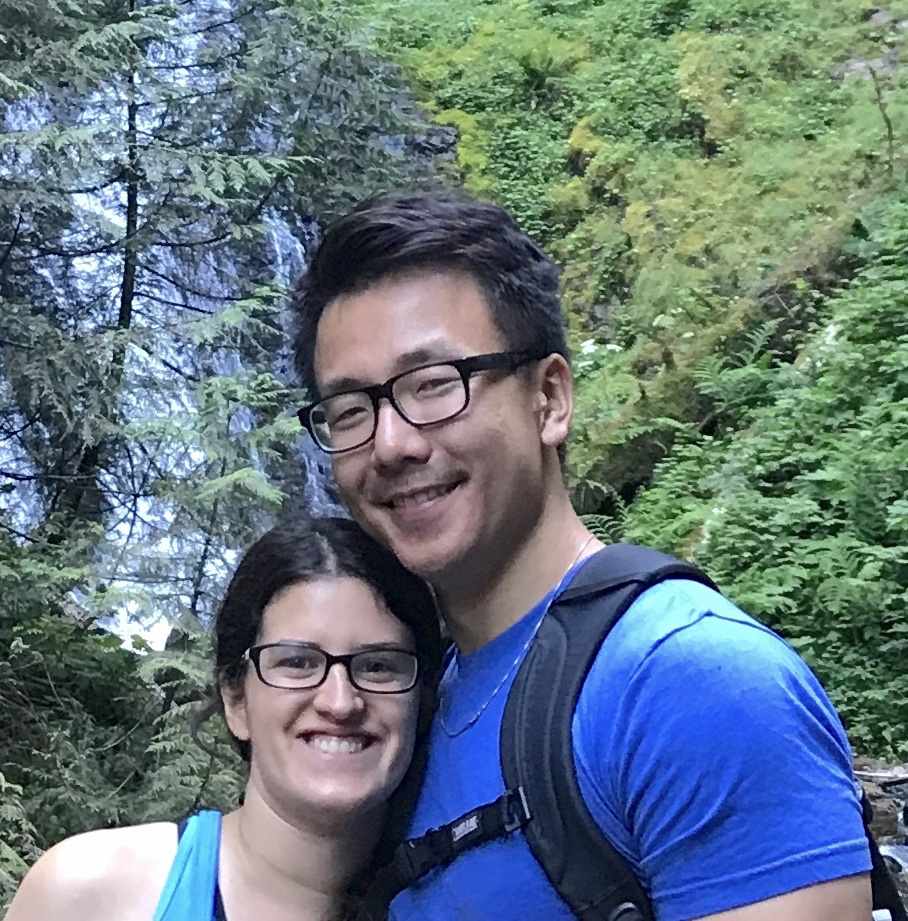

Hi there! I'm Michael. I'm a Full Stack Web Developer and DevOps professional with over eight years of technical experience.
Software development has become my passion, because it allows me to help others by creating solutions to complex problems.
My technical journey first started with Linux and Windows systems administration. I then transitioned into DevOps, focusing on infrastructure automation and service reliability through the use of Chef and Ruby.
As my roles became more and more development focused, I realized that's where I wanted to continue. I'm currently enrolled in Udacity's Full Stack Web Development Nanodegree program. Through the program, I've added front-end development skills like HTML, CSS, and JavaScript to my toolbelt. I've learned the importance of responsive web design, and gained the ability to create feature-rich web apps. I also improved upon my Python skills a considerable amount along the way.
I enjoy working with others to build great things. Eating and traveling along the way makes the experience even better.
